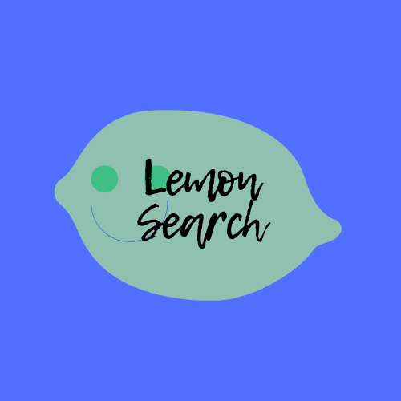

LemonSearch is an efficient AI based search tool built with the gemini api, using custom instructed gemini 3.1 flash lite model. It is specifically built for efficient retrieval of realtime information, and to only provide truthful information that it can really find. It also is instructed to not give any opinions on any topic or subject area, and stay objective to the facts.
LemonHealth is a command line based health calculator made with ‘Python’ which can calculate various health functions and classify the results according to various standards by WHO and other international organizations using age/gender/regional data inputs and gives health advice related to the classification data outputs from the program.
LemonEye is a python script that sends an audio reminder every 20 minutes, for those who want to use the 20-20-20 rule to protect their eyes. It has no interface, and runs in the background if all requirements are fulfilled. It can be customized to play any audio file you want, every 20 minutes, but the file should be in .wav format. Startup sound can also be changed.